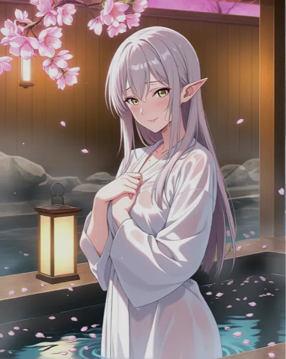

23rd World'sLargest Gen AI App
Have you ever chatted with an AI before?
We will personalize your experience based on your answers
We will personalize your experience based on your answers
We will personalize your experience based on your answers
We will personalize your experience based on your answers
Select all that apply
Describe the scene in detail
Bringing your fantasy to life…